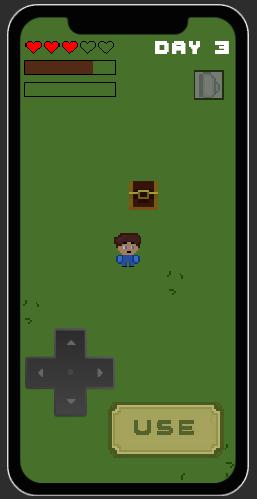
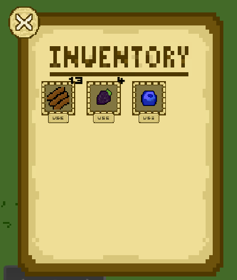

Project 02
Isolation
Overview
Isolation is a game that is unreleased, but I have a lot of good programming reps that went into this game. I learned basic animation, more advanced collision detection, UI design, and so much more. The downfall of this game and the reason it isn't finished was a major lack of planning. I went into this game with a vague vision for a final result. This ended up costing me a lot of time programming and developing slowly because I didn't know what I wanted. I am not opposed to going back and finishing this game one day, but I was unable to finish it with no clear direction on where to go... To be clear I am still very happy I started this project and it is time well spent, I learned a lot and it helped me develop as a game designer.

About Isolation
Isolation is an adventure game, unfortunately past that I'm not sure what this game was going to become. I was
going to make it an adventure/puzzle game with an integration between the two generes. I hope one day I will go back and
finish this game.